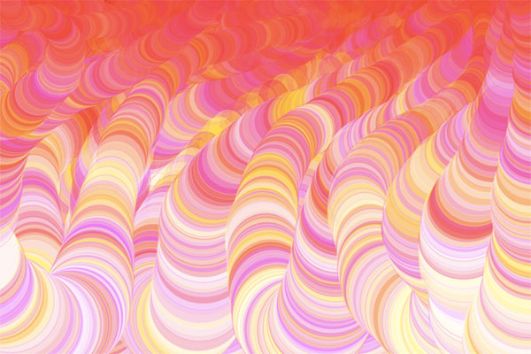
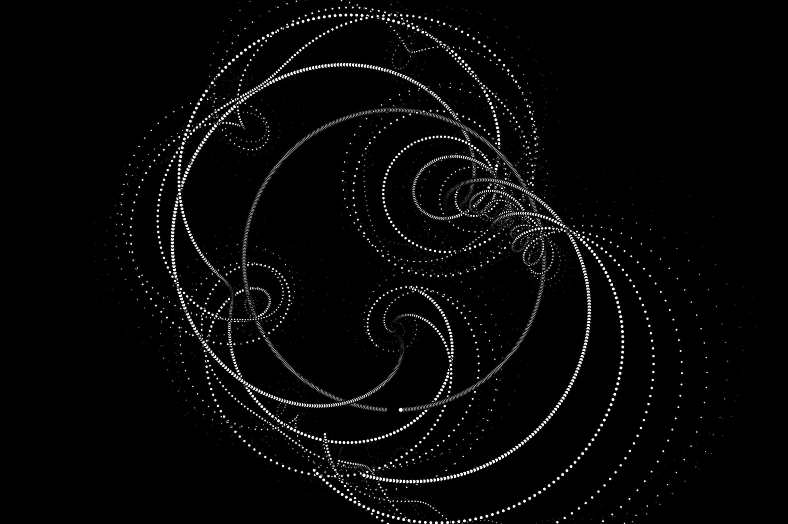

Creative Coding / Animation
●
If Dr. Seuss Was A Programmer
I created this "drawing" mechanism that would enable me to create costume visuals that variate in size and color as well as overall aesthetic depending on the movement of the mouse. Dr. Seuss' The Lorax and his overall aesthetic in his books was definitely an inspiration while creating this tool in p5.js. It was created through code in Java Script language. It is mainly a visual piece that can result in many different types of renders.



Press play to see how it works!
●
Some Things Never Change
I created Some Things Never Change in order to integrate three passions of mine - photography, animation and color. I began with the initial question of "How am I going to display my photography in an animated 3D object? I decided to go out to photograph for a whole day and found a lot of graffiti that I could photograph, edit and crop out to create a new work of art. In the photograph of the two palms, one hand reads "Some Things" and the other "Never Change". This inspired me to create a repetitive and cyclical movement between all these very organic objects, that are changing position but at the same time always coming back to their origin. I used indigo, purple and pink as the colors to set the tone for the piece.
●
Words That Broke My Heart
These two pieces were created in order to visualize words that I heard and read that immediately broke my heart. Through the use of color animation in the text, I intend to complicate the reading of these words in order to give focus to every single word, which in context, broke my heart one word at a time.
This animation was created using p5.js. It was created through code in Java Script language. The photograph in the 3D shapes was taken by me. The text in the hands says: Some Things Never Change - therefore, the name of my piece.
Other works
